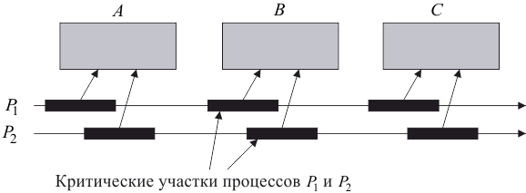

Поведение систем параллельных процессов реализуется на обыкновенной ЭВМ с хранимой программой с помощью режима разделения времени, при котором единственный процессор поочередно выполняет каждый из процессов, причем смена выполняемого процесса происходит по прерыванию, исходящему от некоторого внешнего или синхронизирующего устройства [18]. При такой реализации легко позволить параллельным процессам совместно использовать общую память, выборка и загрузка которой осуществляется каждым процессом.
Ячейка общей памяти – это разделяемая переменная:
| . |
Вместе с тем произвольное чередование присваиваний в ячейку общей памяти различными процессами является причиной многочисленных опасностей.
Разделяемая переменная используется для подсчета числа исполнений некоторого важного события. При каждом наступлении этого события соответствующий процесс или пытается изменить значение счетчика парой взаимодействий:
| . |
Эти два взаимодействия могут перемежаться аналогичной парой взаимодействий от другого процесса, в результате чего мы получим последовательность:
В итоге значение счетчика увеличится лишь на единицу, а не на два.
Такого рода ошибки известны как взаимное влияние и часто допускаются при проектировании процессов, совместно использующих общую память. Кроме того, проявление такой ошибки недетерминировано; ее воспроизводимость очень ненадежна, и поэтому ее практически невозможно диагностировать обычными методами тестирования.
Возможным решением этой проблемы может быть контроль над тем, чтобы смена процесса не происходила при совершении последовательности действий, нуждающихся в защите от чередования. Такая последовательность называется критическим участком.
Рисунок 3.1 демонстрирует понятие критических участков. Здесь – разделяемый ресурс; – процессы.

Рис. 3.1 – Критические участки
При реализации с одним процессором требуемое исключение обычно достигается запрещением всех прерываний на протяжении критического участка. Нежелательным эффектом такого решения является задержка ответа на прерывание.
Для решения этой проблемы Э. Дейкстра предложил идею использования семафоров. Согласно Дейкстре, семафор – это объект, позволяющий войти в заданный участок кода не более чем потокам.
Соответственно, если , имеем двоичный семафор. Двоичный семафор можно описать как процесс, поочередно выполняющий действия с именами и :
| . |
Он описывается как совместно используемый ресурс:
| . |
При условии, что все процессы подчиняются этой дисциплине, каждый из двух процессов не сможет влиять на изменение счетчика – произвести действие . Таким образом, критический участок, на котором происходит увеличение счетчика, должен иметь вид:
Если все процессы подчиняются этой дисциплине, каждый из двух процессов не сможет влиять на изменение счетчика своим партнером. Но если какой-нибудь процесс пропустит или или выполнит их в обратном порядке, результат будет непредсказуемым и может привести к катастрофической (неуловимой) ошибке.
Избежать взаимного влияния гораздо более надежным способом можно, встроив необходимую защиту в саму конструкцию общей памяти, воспользовавшись знанием о предполагаемом способе ее использования. Если, например, переменная будет использоваться только как счетчик, то ее увеличение можно задать одной элементарной операцией счет.вверх, а соответствующий разделяемый ресурс определить как :
| . |
В общем случае необходимо, чтобы каждый совместно используемый ресурс заранее проектировался для своих целей, и чтобы в разработке системы с элементами параллелизма универсальная память не использовалась совместно. Этот метод не только предупреждает серьезную опасность случайного взаимного влияния, но и позволяет получать конструкции, поддающиеся эффективной реализации на сетях распределенных процессорных элементов, а также на одно- и многопроцессорных ЭВМ с физически общей памятью.